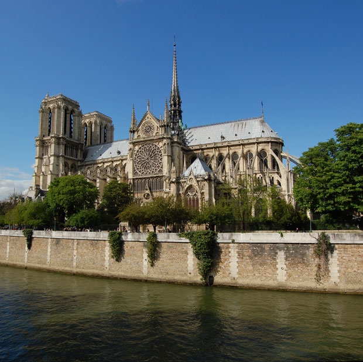

Paris houses many of history's more stunning spiritual relics-- cathedrals and chuches that stand today as breathtaking testimonials to a complex heritage of Christianity that dominated in Paris from the fall of the Roman Empire to the French Revolution. Many of these majestic cathedrals and churches fell into near-ruin in the wake of the Revolution, but revived interest in the 19th century brought about their restoration.

Notre Dame de Paris (IPA: [nɔtʁ dam də paʁi]; French for Our Lady of Paris), also known as Notre Dame Cathedral,[2] is a Gothic, Catholic cathedral on the eastern half of the Île de la Cité in the fourth arrondissement of Paris, France. It is the cathedral of the Catholic Archdiocese of Paris: that is, it is the church that contains the cathedra (official chair) of the Archbishop of Paris, currently André Vingt-Trois. The cathedral treasury houses a reliquary with the purported Crown of Thorns.
Notre Dame de Paris is widely considered one of the finest examples of French Gothic architecture in France and in Europe, and the naturalism of its sculptures and stained glass are in contrast with earlier Romanesque architecture. The first period of construction from 1163 into 1240s coincided with the musical experiments of the Notre Dame school.
The cathedral suffered desecration during the radical phase of the French Revolution in the 1790s, when much of its religious imagery was damaged or destroyed. An extensive restoration supervised by Eugène Viollet-le-Duc removed remaining decoration, returning the cathedral to an 'original' gothic state.
Notre Dame de Paris was among the first buildings in the world to use the flying buttress (arched exterior supports). The building was not originally designed to include the flying buttresses around the choir and nave. After the construction began and the thinner walls (popularized in the Gothic style) grew ever higher, stress fractures began to occur as the walls pushed outward. In response, the cathedral's architects built supports around the outside walls, and later additions continued the pattern. The cathedral was essentially complete by 1345.